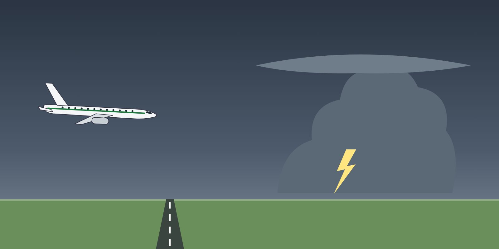

Module 1 · Windshear
Lesson 02: Avoidance and Recognition
Lesson narration
Checking for narration…
Learning objectives
- Use weather reports and alerts to avoid windshear.
- Recognise the cues of a windshear encounter.
- Understand predictive and reactive windshear systems.

Avoid — the best defence
- Use the METAR, TAF, SIGMET, ATIS and pilot reports:
TS,+TSRA,CB, gusts,WSgroups in METARs (e.g.WS R26) and low-level windshear alerts. - Watch for visual signs: virga, rain shafts, dust rings on the ground, roll clouds and rapidly changing wind socks.
- Delay the take-off or approach when severe windshear or a microburst is reported or forecast, or when a strong thunderstorm is over or near the aerodrome. Hold or divert.
- If windshear is possible: use the maximum take-off thrust or the take-off settings recommended by your FCOM/AOM, consider the longest suitable runway, and brief the escape manoeuvre.
Recognise
- Unexpected airspeed changes — typically more than about 15 kt.
- Vertical speed deviations — for example 500 ft/min or more from normal.
- Pitch attitude changes and deviations from the glide path.
- Unusual thrust lever positions needed to hold the speed.
- Aural and visual windshear warnings.
Windshear systems
- Predictive windshear (weather radar based, where fitted) looks ahead and alerts before the aircraft enters the windshear — “WINDSHEAR AHEAD” cautions and warnings, depending on the system.
- Reactive windshear (EGPWS or flight control computer based, where fitted) alerts when the aircraft is already in windshear — “WINDSHEAR, WINDSHEAR, WINDSHEAR”.
- Know which systems your aircraft has and how they are inhibited during certain phases.
Fleet note
The available windshear warnings differ between the B737-800, the Q400 and the Q200. Check the FCOM / AOM for your aircraft.
Key takeaways
- Avoid first: reports, radar, visual signs; delay or divert.
- Cues: speed changes over about 15 kt, vertical speed deviations of about 500 ft/min, unusual thrust.
- Predictive warns before entry; reactive warns when inside.
Knowledge check
What is the most effective defence against microburst windshear?